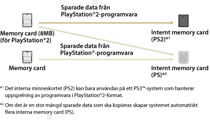

Spel > Spela PlayStation®2 / PlayStation®-programvara > Använda sparade data på minneskort
Använda sparade data på minneskort
Om du vill använda sparade data på ett minneskort (8MB) (för PlayStation®2) eller ett minneskort för att spela ett spel måste du kopiera data till ett internt minneskort i lagringsminnet. Du måste använda en Memory Card-adapter (säljs separat) för att kopiera informationen.
Viktig information
- Vissa PlayStation®2- eller PlayStation®-programvarutitlar kan spelas upp annorlunda på PS3™-systemet än de gör på PlayStation®2- och PlayStation®-systemen, eller inte spelas upp korrekt på PS3™-systemet.
- Skivor i PlayStation®2-format kan inte spelas på vissa PS3™-system. För mer information, se [Olika typer av uppspelningsbara skivor], besök SIE-webbsidan för ditt land eller läs dokumentationen som följde med ditt PS3™-system.
1. |
Välj |
|---|---|
2. |
Anslut minneskortadaptern till PS3™-systemet och sätt in ett minneskort. |
3. |
Välj ikonen för de sparade data du vill kopiera från det minneskort som visas, och tryck därefter på |
4. |
Välj [Kopiera]. |
5. |
Tilldela platser |
 (Spel) >
(Spel) >  (Verktyg för Memory Card).
(Verktyg för Memory Card). (Memory Card (PS)) eller
(Memory Card (PS)) eller  (Memory Card (PS2)) visas.
(Memory Card (PS2)) visas. (Skapa nytt internt Memory Card) och följ därefter instruktionerna på skärmen för att skapa ett internt memory card.
(Skapa nytt internt Memory Card) och följ därefter instruktionerna på skärmen för att skapa ett internt memory card.Tips!
- Beroende på datatyp kopieras sparade data från ett memory card (8MB) (för PlayStation®2) eller ett memory card till ett internt minneskort enligt nedan.
- Kopieringen kan ta upp till flera minuter för viss sparad data.
- Välj minneskortet i steg 3 för att kopiera all sparad data på ett Memory Card (8MB) (för PlayStation®2) eller ett minneskort, tryck på knappen
 och välj därefter [Kopiera] i alternativmenyn.
och välj därefter [Kopiera] i alternativmenyn. - Kopiering kan vara förbjuden för viss sparad data. Välj [Flytta] i steg 4, när du använder sådan data på PS3™-systemet. Sparad data flyttas till lagringsminnet och raderas från minneskortet.
- Du kan flytta tillbaka den sparade informationen till ditt Memory Card senare.

Kopiera sparad information till ett minneskort
Kopiera sparad data för PlayStation®2-/PlayStation®-programvara som sparats i lagringsminnet, till ett minneskort eller ett minneskort (8MB) (för PlayStation®2). Du måste använda en Memory Card-adapter (säljs separat) för att kopiera informationen.
1. |
Välj |
|---|---|
2. |
Anslut din Memory Card-adapter till PS3™-systemet och sätt in ett Memory Card. |
3. |
Välj ikonen för de sparade data du vill kopiera från (Internt Memory Card (PS)) eller |
4. |
Välj [Kopiera]. |
 (Internt Memory Card (PS2)) där informationen finns sparad, och klicka därefter på knappen
(Internt Memory Card (PS2)) där informationen finns sparad, och klicka därefter på knappen Tips!
- Flera poster med sparad information på ett internt Memory Card kan inte kopieras tillsammans till ett Memory Card.
- Kopiering kan vara förbjuden för viss sparad data. Välj [Flytta] i steg 4, när du använder sådan data på PS3™-systemet. Sparad data flyttas till lagringsminnet och raderas från det interna minneskortet.
- Du kan flytta tillbaka den sparade informationen till ditt Memory Card senare.